- present
Doctoral researcher, ongoing
SnT, University of Luxembourg
Advisor: Prof. Dr Holger Voos
- Semantic relational SLAM and situational-awareness architectures for UAVs.
- Collaborative missions using shared semantic maps as a research direction.
Education / 04
Completed degree, ongoing doctoral research, and specialist training in space systems and multi-robot systems.
- present
SnT, University of Luxembourg
Advisor: Prof. Dr Holger Voos
-
University of Nottingham
Selected participation photographs and certificates. Select a preview to enlarge it.
-
Czech Technical University, Prague
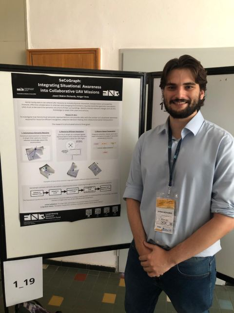
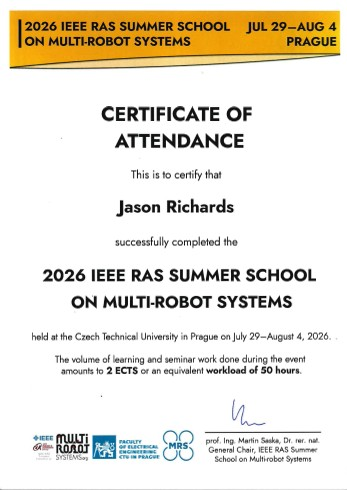
AGH University, Krakow
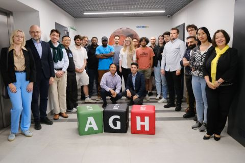
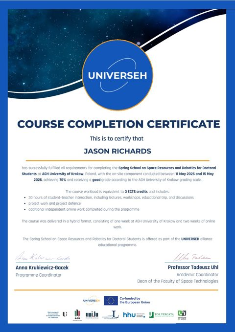
University of Namur · Libin, Belgium
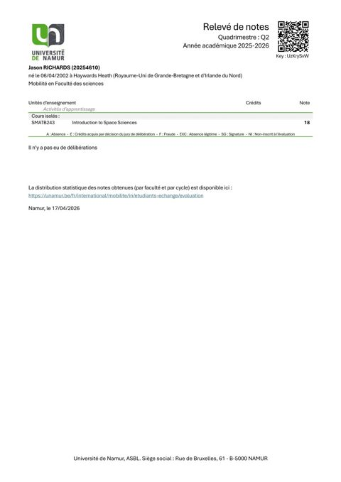
ESA Academy, Transinne, Belgium
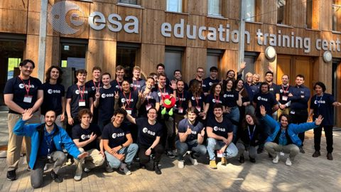
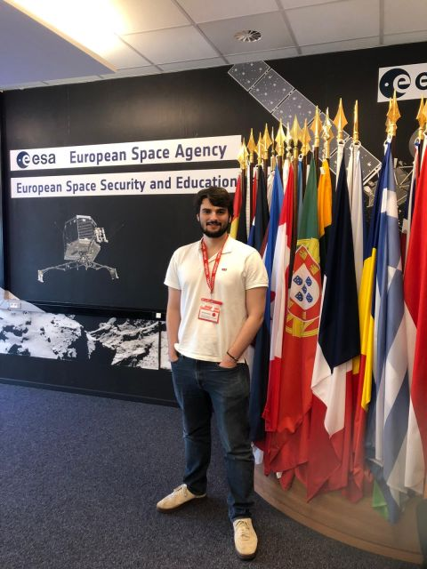
-
The Open University · Team Isidis
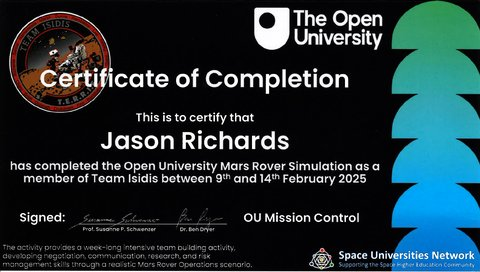
University of Manchester
Attended keynote lectures by Prof. Rodolphe Sepulchre, Prof. Jonathan P. How, Prof. Maria Prandini, and Prof. Bruno Siciliano.
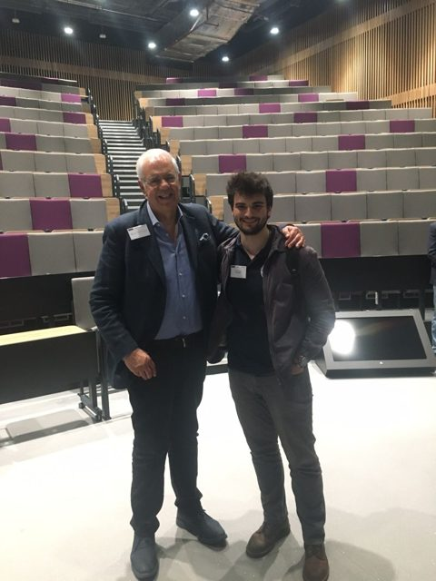
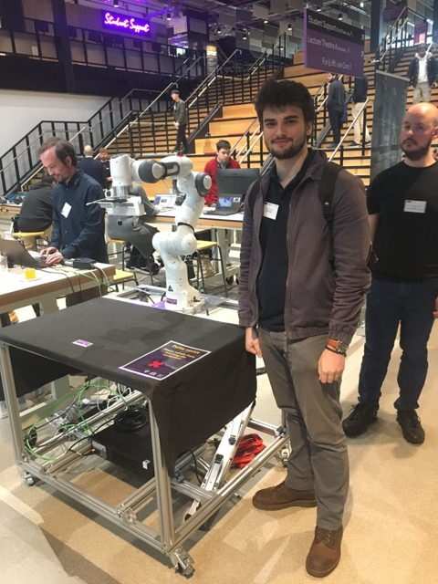
Attended as an undergraduate member of the NottSpace research group working on JamSail, learning about different aspects of satellite engineering.
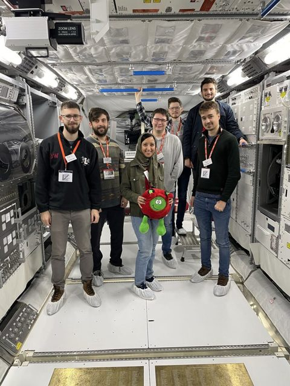